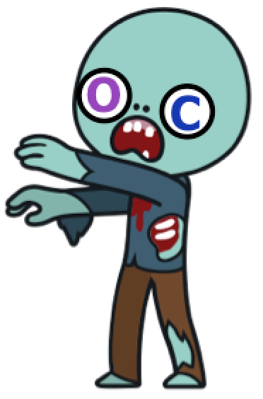
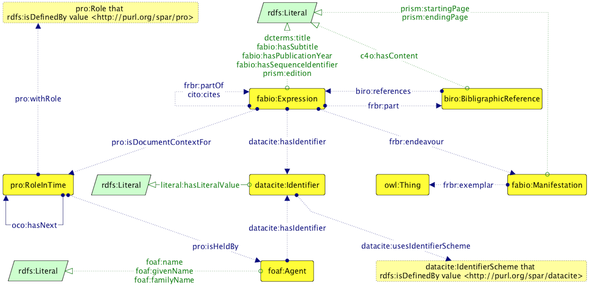

Paper (HTML): https://w3id.org/people/essepuntato/papers/oc-iswc2017.html
Paper (DOI): https://doi.org/10.1007/978-3-319-68204-4_19
Slides (HTML): https://w3id.org/people/essepuntato/presentations/oc-iswc2017.html
Slides (DOI): https://doi.org/10.6084/m9.figshare.5526967
Silvio Peroni • David Shotton • Fabio Vitali
16th International Semantic Web Conference (ISWC 2017), 21-25 October 2017, Vienna, Austria
Reference lists from academic articles are core elements of scholarly communication that permit the attribution of credit and integrate our independent research endeavours. Hitherto, however, they have not been freely available in an appropriate machine-readable format such as RDF and in aggregate for use by scholars. To address this issue, one year ago we started ingesting citation data from the Open Access literature into the OpenCitations Corpus (OCC), creating an RDF dataset of scholarly citation data that is open to all. In this paper we introduce the OCC and we discuss its outcomes and uses after the first year of life.
Citations are the links that knit together our scientific and cultural knowledge
However often they are enclosed in closed citation indexes thought only for human consumption and/or accessible only by paying significant fees
The OpenCitations Corpus (OCC, http://opencitations.net) is a LOD repository of CC0 citation data described with SPAR Ontologies (http://www.sparontologies.net)
It provides >11M citation links from ~260,000 citing articles to ~6M cited resources + provenance information
We developed several scripts for implementing the ingestion workflow that populates the OpenCitations Corpus
All the software is available on the OpenCitations GitHub repository and released as open source code with the ISC License
These scripts implement a live and iterative process
Live: it's working while I'm speaking. It doesn't sleep, never. It's like a sentient, relentless, fast zombie – watch out!
Iterative: the ingestion workflow continuously calls several external APIs to obtain new reference lists and clean metadata of the citing and cited papers
At present, all the reference lists are taken by processing the XML sources of the papers in the PubMed Central Open Access subset
Europe PubMed Central API for retrieving the XML sources
We ask for the most recent papers first
Citing papers includes articles published in 2016 and 2017
There are 1.75M OA articles available in PubMed, according to their API. We have harvested 15% so far...
Crossref APIs to obtain additional information (title, authors, venues, etc.) about citing/cited papers, and then call the ORCID APIs to obtain ORCIDs of the authors
Available at https://doi.org/10.6084/m9.figshare.3443876 and implemented in the OpenCitations Ontology

| Entity type | What it describes | Count in the OCC |
|---|---|---|
| Bibliographic resource (br) | Conference papers, book chapters, journal articles, academic proceedings, books, journals, etc. | ~7.3M |
| Resource embodiment (re) | Digital vs. print, first and ending pages, etc. | ~4.3M |
| Bibliographic entry (be) | Textual content of a reference in a reference list | ~10.5M |
| Resposible agent (ra) | Given name, family name and ORCID of the agent involved | ~22.5M |
| Agent role (ar) | Author, publisher, etc. | ~28.6M |
| Identifier (id) | DOI, PubMed ID, PubMed Central ID, ORCID, ISSN, etc. | ~15.1M |
| Data statements | Provenance statements |
|---|---|
| ~0.45B | ~1.5B |
| Entity type | Kinds of entity | Entities with identifiers |
|---|---|---|
| Bibliographic resource |
Academic Proceedings: 13,804 Book: 47,824 Book Chapter: 68,798 Book Series: 15 Data File: 4,155 Expression Collection: 10,321 Journal: 27,373 Journal Article: 4,481,224 Journal Issue: 1,029,369 Journal Volume: 365,286 Part: 6 Proceedings Paper: 28,125 Reference Book: 66 Reference Entry: 7,917 Report Document: 1,946 Series: 155 Specification Document: 600 Thesis: 768 Generic kind: 1,281,627 |
DOI: 4,697,326 ISBN: 82,329 ISSN: 38,359 PMCID: 1,280,229 PMID: 3,954,683 URL: 4,835,585 |
| Responsible agent | - |
ORCID: 240,989 URL: 5,642 |
| Identifier |
DOI: 4,697,326 ISBN: 82,329 ISSN: 38,359 ORCID: 240,989 PMCID: 1,280,229 PMID: 3,954,683 URL: 4,841,227 |
- |
More details: http://w3id.org/people/essepuntato/papers/oc-garr2017.html
Direct access to bibliographic resources by means of their HTTP URIs (via content negotiation, e.g. https://w3id.org/oc/corpus/br/1)
SPARQL endpoint (https://w3id.org/oc/sparql)
Monthly dumps (http://opencitations.net/download, stored in Figshare)
Dump views and downloads
Some known adopters: Wikidata, OpenAIRE, LOC-DB, eLife, Ontotext, independent researchers (Anna Kamińska, Daniel Himmelstein, Thiago Nunes and Daniel Schwabe)
Website accesses
Use by country: United States (33.7%), France (31.3%), Bulgaria (14.3%)
OpenCitations Blog on Wordpress at https://opencitations.wordpress.com
OpenCitations Twitter account at https://twitter.com/opencitations
The Initiative for Open Citations (I4OC, https://i4oc.org) is a collaboration between scholarly publishers, researchers, and other interested parties to promote the unrestricted availability of scholarly citation data
Goal: promote the availability of data on citations that are available in machine-readable formats, decoupled from the source they have been extracted, freely accessible and usable
What happened: before I4OC launch (6 April 2017), 1% of publications in Crossref with open references
We have recently received a small grant from the Sloan Foundation for one year's salary for a postdoc to develop new user interfaces, and new hardware to enhance the OCC performance - from 8M citations per year to 240M
Silvio Peroni • David Shotton • Fabio Vitali
16th International Semantic Web Conference (ISWC 2017), 21-25 October 2017, Vienna, Austria